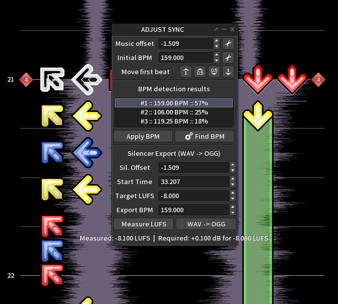
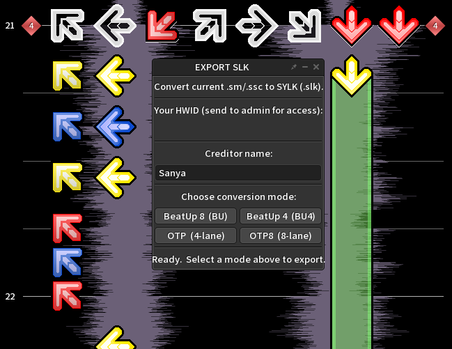

Arrow Vortex Plugins
Official documentation for native C++ workflow plugins.
🔇 AV Silencer Plugin
A native audio processing extension for Arrow Vortex. It allows you to silence .wav files directly within the editor environment and exports them smoothly into .ogg format while automatically applying precise LUFS adjustments.

- Direct Arrow Vortex Integration
- On-the-fly WAV to OGG conversion
- Automated LUFS normalization for perfect audio levels
⚙️ AV Converter Plugin (SLK Export)
A fully ported C++ version of the SanConverter logic, built directly into Arrow Vortex. It reads measure data on-the-fly and exports ready-to-use .slk files without needing an external executable.

C++ Charting Logic (AV Native)
| AV Column | Function | SLK Key / Result |
|---|---|---|
| 1, 2, 3 | Standard Left Notes | 7, 4, 1 |
| 4, 5, 6 | Standard Right Notes | 9, 6, 3 |
| 7 | State Marker | 2 = Hold, 4 = Roll, 3 = End |
| 7 | Smart Random Key | Generates Random Key based on pressed lanes* |
| 8 | Space Modifier | If 1 = Space (s) |
| 7 + 8 (Mines) | Hidden Note | Mine on 7 = Double, Mine on 7+8 = Triple |
| Mine 8 | Finish Move | s,f |
| Key Lane + 8 Mine | Note finish | n,f |
| Lane 7=1 + Lane 8=1 | Finish | f |
- * Smart Random Key (Lane 7 = '1'): If Lane 1 is also pressed, it picks a random Left key. If Lane 2 is pressed, a Right key. If none, it picks from all keys.
- Hold (2): Restricts notes inside the hold to max 2 jacks in a row.
- Roll (4): Restricts notes inside the roll to NO consecutive jacks.
| AV Column | Function | Result |
|---|---|---|
| 0 (Key 1) | Note Generator | Random Generated Note (n) |
| 1 (Key 2) | Space Modifier | 1 = Space (s) | M = Space+Finish (s,f) |
| 2 (Key 3) | Left Modifier | 2 = Hold Left | 4 = Roll Left | 3 = End |
| 3 (Key 4) | Right Modifier | 2 = Hold Right | 4 = Roll Right | 3 = End |
- If both Left and Right modifiers are active simultaneously, the plugin generates alternating patterns or global no-repeat keys based on the hold/roll state.
| Arrow Vortex Key | OTP .SLK Key | Comment |
|---|---|---|
| 1 | n | Note |
| 2 | c | Change |
| 3 | d | Dance |
| 4 | s | Space |
| 1 + 2 + 3 + 4 | r | Rotation |
| Arrow Vortex Key | OTP .SLK Key | Comment |
|---|---|---|
| 1 | n | Note |
| 2 | c | Change |
| 3 | s | Space |
| 4 | n | Note |
| 5 | c | Change |
| 6 | s | Space |
| 7 | d | Dance |
| 8 | r | Rotate |